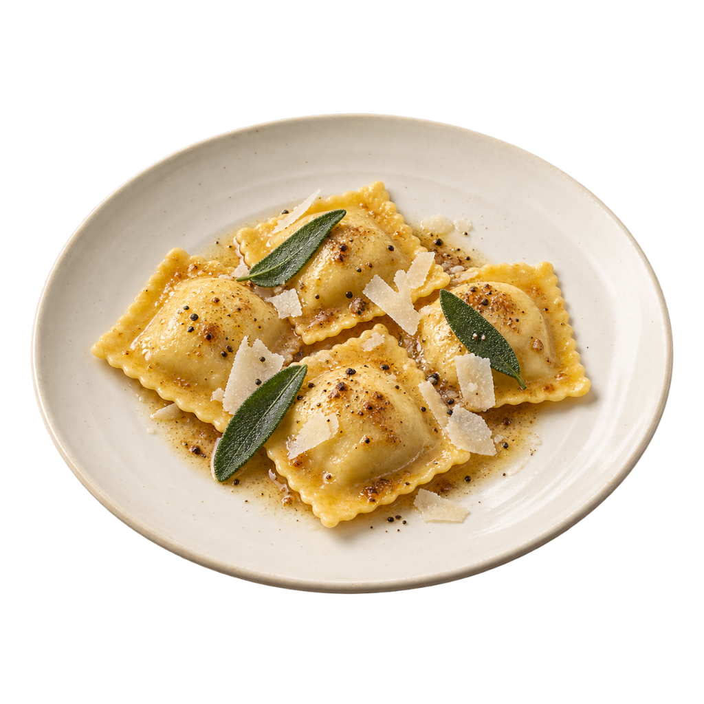

Imagen no disponible01 / RESTAURANTESTu menú.
Tu menú.
A mano.
Muestra tus platos y precios. Organiza el menú y los pedidos según lo que necesite tu local.
Interfaz de ejemplo. El alcance se define con cada negocio.